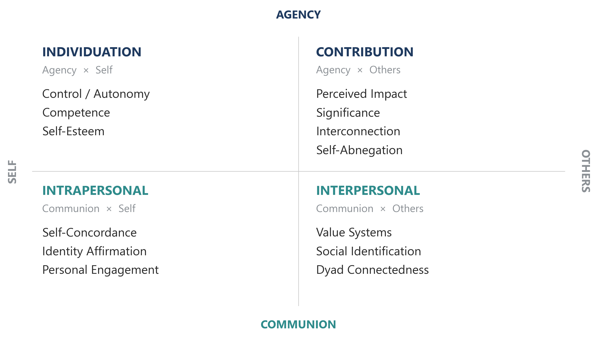
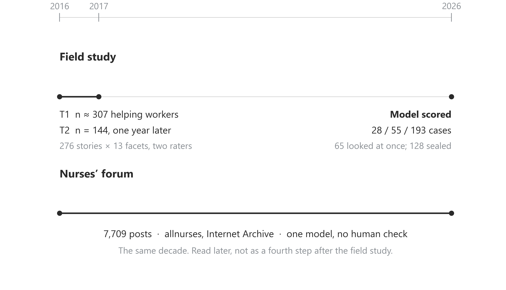
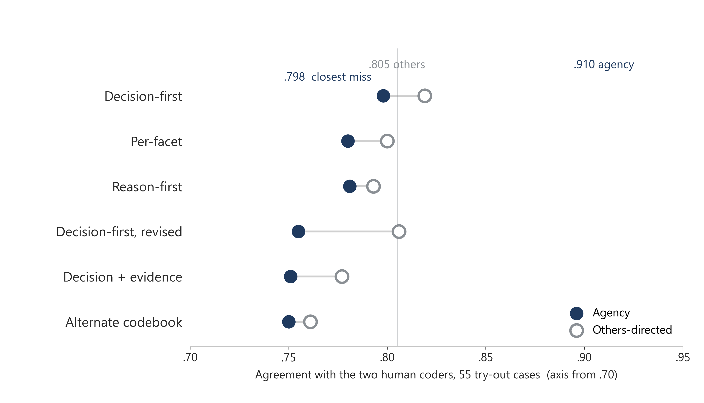
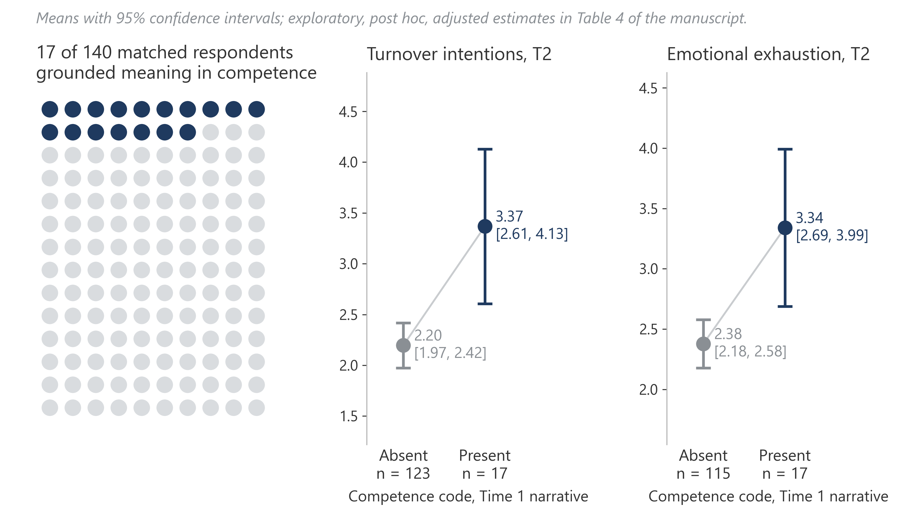
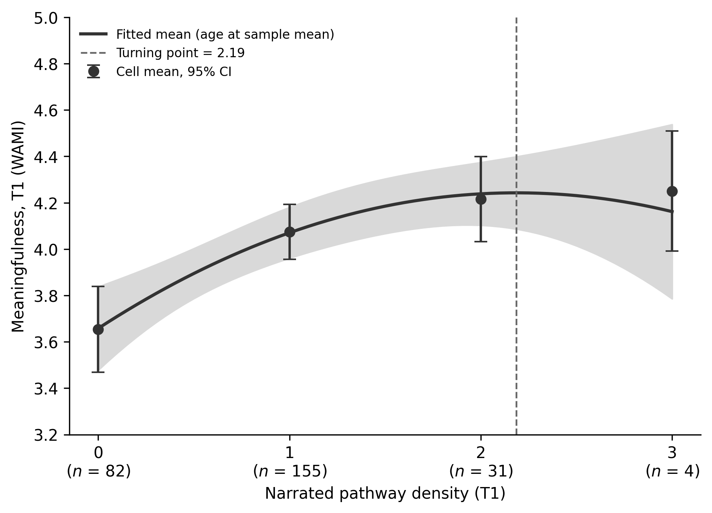
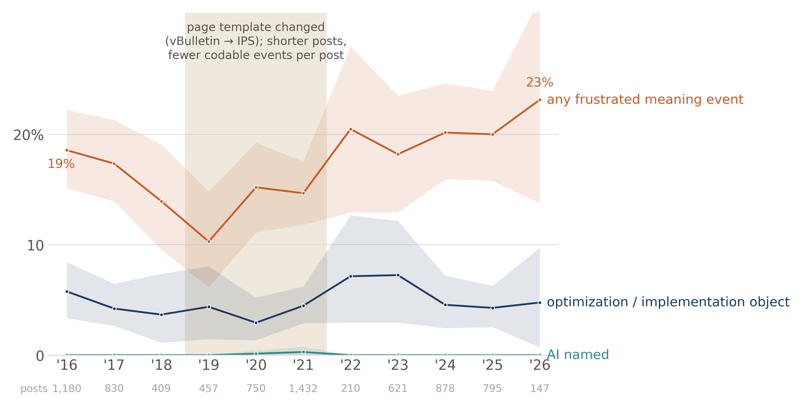
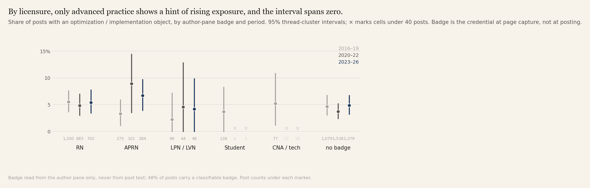

One sentence
When helping work is optimized, the open measurement question is whether the tasks that carry meaning are the ones removed—and whether text models can map that meaning before anyone automates it.
The argument
Meaning is task-bound
Rosso, Dekas, and Wrzesniewski (2010) organize meaning as Agency–Communion crossed with Self–Others. Contribution and unification are two of those pathways. They are also the tasks now first in line for documentation, monitoring, and coordination tools.
More meaning is not always better
Calling-infused work can bind people to exhaustion (Bunderson & Thompson, 2009). Rosso and colleagues left open a curvilinear conjecture: too many active pathways may exhaust rather than sustain. A full reversal into strain is almost never identified. What this sample shows is flattening: Time 1 felt meaning rises from zero to two pathways and then levels.
Text scoring of meaning is only auditable where humans already agree
People analytics will be asked to score meaning from text. The working method here is a gate, not a finished scorer: find out how well two trained humans agree on each kind of meaning first, write the pass marks down and set aside a file of cases before any model is chosen, and accept a model only where it clears the mark. Agency and others-directed meaning already have ceilings high enough to test against; communion and self do not, so they have no pass mark. That map is what turns a vendor accuracy claim into a dimension-specific audit.
The 2 × 2 we coded
Thirteen present/absent facets nest in four pathways. A pathway counts as present if any of its facets is. We do not score Rosso’s seven mechanisms as a middle layer; they cut across the 2 × 2. Color on the figure is the pathway: navy agency, teal communion, grey Self–Others.

The design
Time 1 (March 2016): critical-incident narratives and meaning surveys, helping-profession workers, healthcare-majority online panel, N ≈ 307. Time 2 (February–March 2017): felt meaningfulness, emotional exhaustion, and turnover intentions, n = 144 complete longitudinal cases. Two trained humans coded 276 stories on all 13 facets (3,614 cells). Disagreements went to blinded adjudication. Model instructions were written only on a practice slice of the stories and scored once on a try-out slice. After the paper’s results were fixed, one descriptive look at 65 of the set-aside cases was taken under rules written down beforehand (two setups that had already missed the mark; reported as a number on cases the models had never seen, not as validation); the remaining 128 cases stay untouched.

Finding 1. The human ceiling is not one number
How often the two coders agreed a kind of meaning was present when either saw it, with 95% intervals; n = 276 stories. Position on 0–1, not bar length.
Vendor claim: “we measure belonging from text at .90.” Belonging here is the communion pathway. The human pair in this codebook does not reach that. Ask which ceiling the product beat, on which dimension. Color is the pathway: navy agency, teal communion, grey Self–Others. Communion’s interval is the mark that matters.
Finding 2. None of six locked setups reached the agency bar
None of six locked setups reached the agency bar on the try-out slice. Agency .750–.798 against .910; the highest miss is .112 below the bar (reported as .11). Communion and self had no bar (human PSA .48 / .52). Calls ran at the provider’s default temperature; the protocol temperature lock was not applied. A later descriptive 65-case peek is on the methods page only; 128 cases remain sealed.

A model chosen because it matches one human pair inherits that pair’s disagreements. The next test, designed in June, judges a panel of models against later well-being and retention rather than against human agreement (ADR 0010); it has not touched the 128 set-aside stories.
Finding 3. Exploratory: competence-coded stories and later strain (17 of 140)
After the registered next-year tests, an exploratory screen (~1,600 tests, BH q = .10) left competence/mastery as a lead. When Time 1 stories grounded meaning in competence or mastery, Time 2 turnover intentions were higher (b = 1.40, 95% CI [0.58, 2.22], p < .001, n = 100) and so was emotional exhaustion (b = 0.95 [0.20, 1.70], p = .014, n = 94). Seventeen of 140 matched cases carried the code; the association held after adjusting for the full Time 1 survey set. The planned next-year paths from the three broad meaning dimensions came in near zero (three of five single-coefficient tests equivalent to zero at |β| = .30; Table 2 in the manuscript). Candidate for a designed study—not a registered result.

Concurrently, the same codes track self-reported meaningfulness: others-directed r = .24, agency r = .20, contribution r = .23. Felt meaning rises with the number of pathways a person narrates up to two, then levels.

Finding 4. Nurses named the apparatus, not AI
Internet Archive snapshots of allnurses.com, 7,709 posts of at least 200 characters in 1,453 threads, capture dates 1 January 2016 to 8 September 2026 (2026 is a partial year, 147 posts). The codebook is the one two trained humans built on the critical-incident stories. One language model applied that instrument to each post for meaning events: a Rosso facet enacted, frustrated, or wished for, plus what the post blamed or credited (a named AI system, a system rollout, or a management practice such as ratios, productivity metrics, dashboards, or documentation load) and four post-level flags (quit intent, lack of control, anxious, depressed). A 200-post transfer sheet for a second human coding of that forum prose is drawn and not yet coded. The year is when the archive copy was taken.
Seven events in 7,709 posts named an AI system; none after 2021 under the capture-year axis. These are model-assigned object codes on capture-dated snapshots; the 200-post human transfer sheet is not yet coded, so the false-positive rate on forum prose is unknown. About one post in twenty named the optimization apparatus, and that share did not move across the decade (4.8% → 5.2%, 95% CI on the difference [−1.8, 2.4]). Measuring “AI exposure” by whether workers say AI would miss it under this codebook; the exposure that mattered in the talk is the metrics-and-scheduling apparatus.

Finding 5. What moved was control, not skill
Under the same unvalidated transfer (model-only codes), half of the posts naming ratios, metrics, or charting landed on control over how the work is done; frustrated control was the only category that grew (9.6 → 12.7 events per 100 posts; p = .028, but not once we correct for testing 20 categories). Posts flagged for lack of control rose from 10.4% to 14.5% (+4.0 points [1.2, 6.8]; unchanged after adjusting for post length; the only one of eight post-level shares that holds up after correction, q = .028). Competence stayed the most often expressed source of meaning in every period, and belonging and connection were expressed far more often than frustrated. Within the badged posts, RN exposure was flat and advanced-practice exposure rose with an interval that includes zero. Treat these p/q lines as sensitivity furniture until the 200-post transfer sheet is coded.

Posts that name ratios, metrics, or charting also carry quit and lack-of-control flags more often (same post, same model). The language of belonging runs through nearly every post that carries any event yet rarely shows up as a separate episode; we read it as the standard nurses judge lost control against, a hypothesis for a designed study.
What to do this quarter
- Set aside a file of comments nobody scores until the model is final.
- Write the pass mark down first, one per kind of meaning, from how well two trained humans agree. Do not accept one overall accuracy number.
- Make the scoring job check itself: no set-aside comments in the practice pile, no names or identifying details in the output.
The longer kit is in Try this quarter.
Print tiles: hang slides 1–16. Slides 17–18 are extra letter pages (survey meaning by number of pathways; forum categories). Open Monnot_Poster_v5.pptx.
Study 1 maps meaning; AI exposure is read from the documented automation frontier, not measured per person. Finding 3 is exploratory. Forum results are single-model event codes on capture-dated snapshots; the 200-post transfer sheet is not coded.